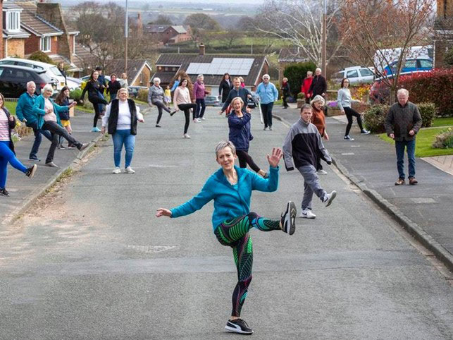

Engelsk B
Ny ordning
kl. 09.00-14.00
Vejledning til opgavesættet
| Du skal besvare følgende opgaver: | |
|
|
| Tekster til assignment 5: | |
| 5A – Fiction: | “Neutral Buoyancy”, a short story by J. R. McConvey, 2014. |
| 5B – Non-fiction: | “How racial bias works - and how to disrupt it”, a TED talk by Jennifer L. Eberhardt, 2020. |
Vejledning og skabelon til at løse opgaven
Den samlede eksaminationstid for Assignment 1-5 er 5 timer. Besvarelsen bedømmes som en helhed ud fra de faglige mål for niveauet. Der lægges vægt på beherskelsen af det engelske sprog, forståelse af forlægget og færdighed i skriftlig fremstilling på engelsk.
Det anbefales, at du skriver din besvarelse i skabelonen, som ligger under Template i menuen til venstre. Besvarelsen afleveres i ét dokument med opgaverne i rækkefølgen 1-5.
Henvisninger til tekst, video- og lydklip
Hvis du citerer, skal du angive kilde.
Alt anvendt materiale skal være engelsksproget og angives med kildehenvisninger. Til forklaring af grammatiske opgaver kan materialerne være på dansk.
Du kan henvise til dele af video- og lydklip, f.eks. ved at angive afspillerens minut- og sekundtal for henholdsvis starten og slutningen af klippet.
Alt anvendt materiale skal være engelsksproget og angives med kildehenvisninger. Til forklaring af grammatiske opgaver kan materialerne være på dansk.
Du kan henvise til dele af video- og lydklip, f.eks. ved at angive afspillerens minut- og sekundtal for henholdsvis starten og slutningen af klippet.
|
Tekster i opgavesættet
Teksternes ortografi og tegnsætning følger forlæggene. Trykfejl er dog rettet.
Opsætningen følger ikke nødvendigvis forlæggene. Dog følges forlægget nøje, hvor opsætningen på den ene eller anden måde indgår i opgaven.
Opsætningen følger ikke nødvendigvis forlæggene. Dog følges forlægget nøje, hvor opsætningen på den ene eller anden måde indgår i opgaven.
Assignment 1
Find alle verberne (udsagnsordene) i præteritum (datid) i nedenstående tekst, og omskriv dem til præsens (nutid). Skriv hele teksten som dit svar, og markér verberne tydeligt som i eksemplet.
| Eksempel: | Henry Hill was introduced… Henry Hill is introduced… |
Henry Hill was introduced to life in the mob almost by accident. In 1955, when he was eleven years old, he wandered into a drab, paint-flecked cabstand at 391 Pine Street, near Pitkin Avenue, in the Brownsville-East New York section of Brooklyn, looking for a part-time, after-school job. The one-story, storefront cabstand and dispatch office was directly across the street from where he lived with his mother, father, four older sisters, and two brothers, and Henry had been intrigued by the place almost as far back as he could remember. Even before he went to work there Henry had seen the long black Cadillacs and Lincolns glide into the block. He had watched the expressionless faces of the cabstand visitors, and he always remembered their huge, wide coats. Some of the visitors were so large that when they hauled themselves out of their cars, the vehicles rose by inches. He saw glittering rings and jewel-studded belt buckles and thick gold wrist bands holding wafer-thin platinum watches.
The men at the cabstand were not like anyone else from the neighborhood. They wore silk suits in the morning and would drape the fenders of their cars with handkerchiefs before leaning back for a talk. He had watched them double-park their cars and never get tickets, even when they parked smack in front of a fire hydrant. In the winter he had seen the city's sanitation trucks plow the snow from the cabstand's parking lot before getting around to cleaning the school yard and hospital grounds.
The men at the cabstand were not like anyone else from the neighborhood. They wore silk suits in the morning and would drape the fenders of their cars with handkerchiefs before leaning back for a talk. He had watched them double-park their cars and never get tickets, even when they parked smack in front of a fire hydrant. In the winter he had seen the city's sanitation trucks plow the snow from the cabstand's parking lot before getting around to cleaning the school yard and hospital grounds.
Nicholas Pileggi, Wiseguy, 1987
Assignment 2
Se videoklippet og besvar opgave a. og b. Brug relevant grammatisk terminologi. Skriv dit svar på dansk.
| a. | Find og skriv fire adverbier (biord). Angiv for hvert adverbium, hvad det lægger sig til. | |
| b. | Angiv ud fra sammenhængen, hvilke ordklasser følgende ord tilhører: |
own: (0:03)
shape: (0:11)
open: (0:17)
work: (0:21)
that (0:56)
set: (1:08)
Assignment 3
Nedenfor er tre danske ord, som hver især er oversat til tre engelske ord/udtryk efterfulgt af et billede.
Vælg for hvert billede det af de engelske ord/udtryk, der passer bedst. Forklar kort, hvorfor det valgte ord/udtryk passer bedst til billedet. Skriv dit svar på dansk.
1. Udnytte: harness/leverage/trade upon
2. Kald: name/calling/summon
3. Uhyggelig: eerie/weird/grisly
Assignment 4
Write a text (50-75 words) to match the photo.
You must use the progressive tense (udvidet tid) at least five times. Underline your examples of the progressive tense in your text.

Assignment 5
- Answer 5A or 5B.
Assignment 5A - Fiction
- Write a short summary of J. R. McConvey’s short story “Neutral Buoyancy” in about 125 words.
- Write an analytical essay (600-900 words) in which you analyse and interpret the short story. Your essay must focus on the role swimming plays in the life of the main character.
Include the following analytical terms in your essay:
narrative technique, composition, main theme
Your essay must include references to the text.
Material
J. R. McConvey, “Neutral Buoyancy”, 2014.
Assignment 5B - Non-fiction
- Write a short summary of the TED talk “How racial bias works - and how to disrupt it” by Jennifer L. Eberhardt in about 125 words.
- Write an analytical essay (600-900 words) about the TED talk. Your essay must focus on how Jennifer L. Eberhardt argues for her views. Discuss briefly whether greater awareness can end racial bias.
Include the following analytical terms in your essay:
sender, intention, style
Your essay must include references to the text.
Material
Jennifer L. Eberhardt, “How racial bias works - and how to disrupt it”, a TED talk from TED website, June 2020.
- TED talk: “How racial bias works - and how to disrupt it”
- Transcript: “How racial bias works - and how to disrupt it”
Sources
Anvendt materiale (til brug for Copydan):
Nicholas Pileggi. Wiseguy. Pocket Books, 1987.
Video: “Nicola Sturgeon: Independence Best for Scotland Post-Brexit”. Guardian News YouTube website, January 31, 2020, viewed September 2020. (www.youtube.com)
Image credit: “An array of solar powered cell converting sun energy into electricity for homes”, Depositphotos website, May 7, 2016, viewed October 2020. (www.depositphotos.com)
Image credit: “Mother Teresa: Advocate for The Poor”, Apeksha News Network website, August 26, 2020, viewed October 2020. (www.apekshanews.com)
Image credit: Olivier De Rycke “Follow me in the dark woods”, Days in Motion website, viewed October 2020. (www.daysinmotion.com)
Image credit: PA, Peter Byrne. “Dancing in the street has boosted community spirit, neighbours say” Shropshire Star website, April 3, 2020, viewed September 2020. (www.shropshirestar.com)
J. R. McConvey. “Neutral Buoyancy”. Joyland website, September 7, 2014, viewed September 2020. (www.joyland.com)
Jennifer L. Eberhardt. “How racial bias works — and how to disrupt it”. TED website, June 2020, viewed September 2020. (www.ted.com)